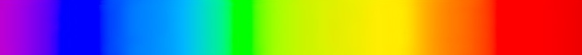
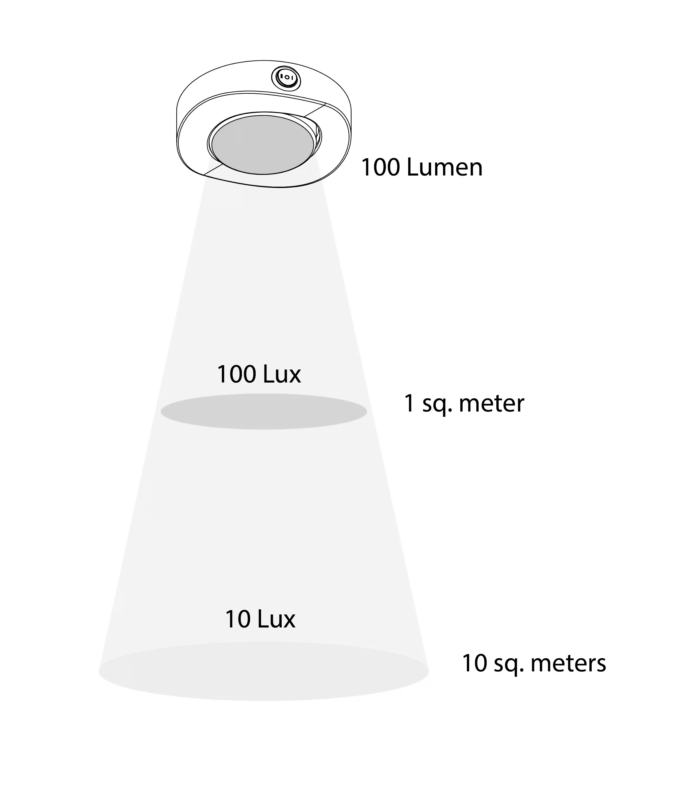
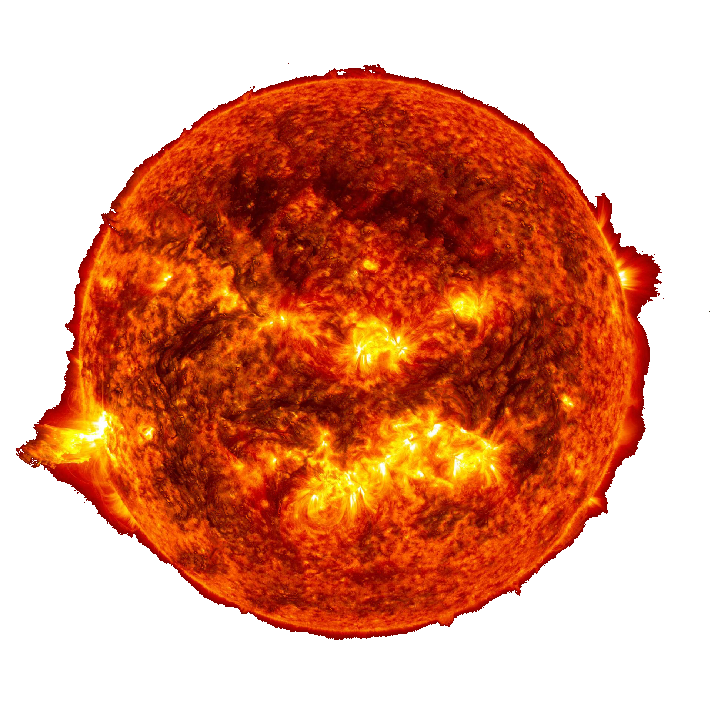
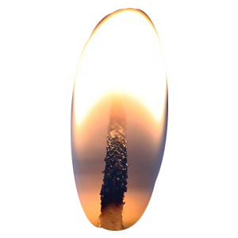

Logo
Warning
Light
WARNING
Beware of Intense Light
빛의 중요성
빛은 인간의 삶과 지구 생태계 전체를 지탱하는
생명 유지를 위한 필수 요소입니다.
On a Global Level
환경 온도 조절
대기 중 오존 형성
기후 시스템 유지
태양광 에너지 활용
농업 생산성 증대
생태계의 먹이사슬 유지
수중 생물의 생존 지원
In Case of Humans
비타민 D 합성
생체리듬 조절
시각 기능 유지
기분 안정 및 우울증 완화
에너지 대사 활성화
면역 기능 강화
수면-각성 주기 유지
생장호르몬 분비 조절
In Case of
Plants and Animals
식물의 광합성
계절 변화 인식
동식물의 생장 유도
개화 시기 조절
번식 주기 조절
하지만 빛의 위험성을 무시할 수는 없습니다
그렇다면 어떻게 빛의 위험성으로부터
도망칠 수 있을까요?

빛의 단위 LUX
위험한 빛을 피하기 위해서는 어떤 빛이 위험한 빛인지
알아야 합니다. 이 때 필요한 빛의 단위, LUX 입니다.
LUX 는 조도를 나타내는 단위로 조도는 단위 면적당
표면에 도달하는 빛의 양을 의미합니다.
LUX = 광도 (c) / 거리 (d)^2
촛불 1개 = 1 LUX
자연광(태양) = 40,000 LUX - 100,000 LUX
 